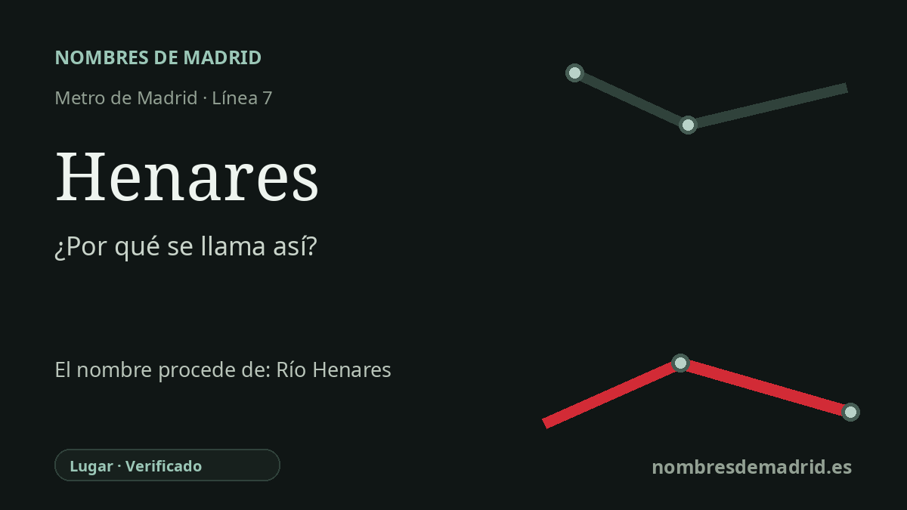

Publicado el · Investigación de Nombres de Madrid · Cómo verificamos cada origen · 5 fuentes consultadas
Respuesta rápida
La estación de Henares toma su nombre del río Henares, el gran hidrónimo del corredor oriental madrileño. El nombre del río procede del castellano henares, plural de henar, lugares o campos con heno.
La historia del nombre
El nombre de la estación Henares remite ante todo al río Henares. La parada está en la línea 7, en San Fernando de Henares, en la avenida de Algorta, dentro del corredor metropolitano oriental donde el río da nombre a municipios, destinos de transporte y a toda una identidad territorial.
El nombre antiguo que hay detrás de la estación no es una persona ni una institución moderna, sino una palabra de paisaje. Toponomasticon Hispaniae, en una entrada redactada por E. Nieto Ballester, explica Henares como el plural de henar, es decir, un sitio poblado de heno. Dicho de otro modo, el hidrónimo evoca henares, prados o terrenos ribereños con heno, no un acontecimiento histórico concreto.
Esa explicación añade además una cronología lingüística. La palabra pertenece en último término a la familia latina de fenum, 'heno', pero la forma toponímica se describe como un colectivo románico, no como un nombre fluvial heredado directamente de la Antigüedad. La misma fuente señala que el hidrónimo actual probablemente sustituyó a otro anterior, y documenta formas medievales como Senares en 1150 y Henares en usos posteriores.
El río atraviesa Guadalajara y Madrid y pasa por lugares que conservan su nombre: Alcalá de Henares, Torrejón de Ardoz, San Fernando de Henares y Mejorada del Campo, entre otros. En la red de Metro, el topónimo entró con MetroEste, la ampliación de la línea 7 inaugurada el 5 de mayo de 2007 para servir a Coslada y San Fernando de Henares; Henares fue una de las estaciones situadas en San Fernando.
Conviene tratar con prudencia otro dato que aparece en algunas historias locales. Varias fuentes afirman que en época islámica el río o su valle se asoció con Wad al-Hayara, luego Guadalajara, traducido a menudo como 'río de piedras' o 'valle de fortalezas'. Es un contexto útil para el corredor del Henares, pero no es el origen directo del nombre de la estación. La cadena mejor documentada es más sencilla: estación -> río Henares -> plural de henar, lugares de heno.